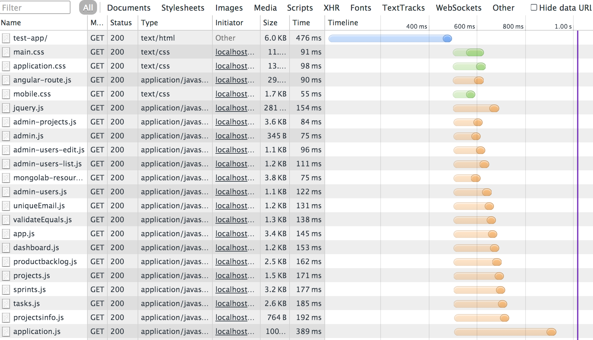
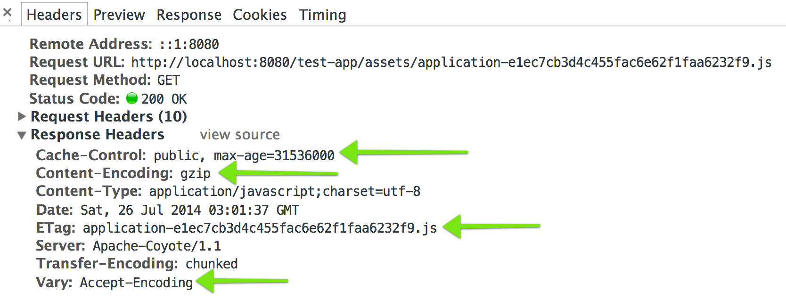

Using Grails
Asset-Pipeline
assets are “static” files
CSS, JavaScript, HTML & Images
Why do assets need a “pipeline”?
the asset you should serve is not the asset you develop
JavaScript should be served concatenated, minified & gzipped with long-lived cache headers
JavaScript should be developed
as many small files
Just like your Groovy and Java code
Your source code might not even be JavaScript
(i.e. CoffeeScript, ClojureScript, ES6, Dart, TypeScript, …)
The best place to do all of this is compile-time
then you're just serving static files
Behavior
With & Without
Asset-Pipeline
(or the resources plugin)
Without Asset-Pipeline
Your layout is littered with tags
<link rel="stylesheet" href="/test-app/assets/main.css" />
<link rel="stylesheet" href="/test-app/assets/mobile.css" />
<link rel="stylesheet" href="/test-app/assets/application.css" />
<script src="/test-app/assets/vendor/angular/angular-route.js" type="text/javascript" ></script>
<script src="/test-app/assets/vendor/jquery/jquery.js" type="text/javascript" ></script>
<script src="/test-app/assets/vendor/mongolab/mongolab-resource.js" type="text/javascript" ></script>
<script src="/test-app/assets/app/admin/admin.js" type="text/javascript" ></script>
<script src="/test-app/assets/app/admin/projects/admin-projects.js" type="text/javascript" ></script>
<script src="/test-app/assets/app/admin/users/admin-users-edit.js" type="text/javascript" ></script>
<script src="/test-app/assets/app/admin/users/admin-users-list.js" type="text/javascript" ></script>
<script src="/test-app/assets/app/admin/users/admin-users.js" type="text/javascript" ></script>
<script src="/test-app/assets/app/admin/users/uniqueEmail.js" type="text/javascript" ></script>
<script src="/test-app/assets/app/admin/users/validateEquals.js" type="text/javascript" ></script>
<script src="/test-app/assets/app/app.js" type="text/javascript" ></script>
<script src="/test-app/assets/app/dashboard/dashboard.js" type="text/javascript" ></script>
<script src="/test-app/assets/app/projects/productbacklog/productbacklog.js" type="text/javascript" ></script>
<script src="/test-app/assets/app/projects/projects.js" type="text/javascript" ></script>
<script src="/test-app/assets/app/projects/sprints/sprints.js" type="text/javascript" ></script>
<script src="/test-app/assets/app/projects/sprints/tasks/tasks.js" type="text/javascript" ></script>
<script src="/test-app/assets/app/projectsinfo/projectsinfo.js" type="text/javascript" ></script>
<script src="/test-app/assets/application.js" type="text/javascript" ></script>
Without Asset-Pipeline
Each tag is a request to the server

With Asset-Pipeline
Assets transpiled, concatenated, minified, gzipped into one file per type
<link rel="stylesheet" href="/test-app/assets/application-08f92c4662379e3e9a56541af70c871c.css"/>
<script src="/test-app/assets/application-e1ec7cb3d4c455fac6e62f1faa6232f9.js" type="text/javascript" ></script>
With Asset-Pipeline
One server hit per file type

Without Asset-Pipeline
Browser cache isn't properly used

With Asset-Pipeline
Initial Request - Good Cache Headers

With Asset-Pipeline
Next Request - Cache Hit

Without Asset-Pipeline
Limited to browser-supported languages
i.e. CSS and JavaScript
With Asset-Pipeline
Can use anything that transpiles to browser-supported languages
ex: SASS, LESS, CoffeeScript, ClojureScript, Dart, TypeScript…
Developing With Asset-Pipeline
Files go in grails-app/assets
file types with manifest comments in them
taglibs in gsps
asset:image
dev mode goes through asset controller
assets served as individual files
show generated html
set to never cache
How Asset-Pipeline Works In Production
- war compilation
- war creates manifest.properties file with etag mapping for each asset
- static assets in
assets folder in the war file
AssetPipelineFilter added to web.xml- request for asset meets filter
- looks for file
- not found 404
- if found looks for etag in manifest
- returns gzipped file with etag and
Vary: Accept-Encoding
Compilation Sausage Factory
- AssetFile (1 per file)
- processor
- post processor?
- look at plugin.groovy file for other details
tips
- angular mangling off for minifcation, or use angular plugin
- cdn support
- other plugins
- write your own asset pipeline plugin
Advantages over Resources Plugin
no waiting to recompile in development
precompilation means easier troubleshooting & faster war startup
dependencies are with assets
Migrating from Resources Plugin
TODO: insert resources rosetta stone
Asset-Pipeline Alternatives
gradle
weak JS support, not part of grails build without more work, doesn't solve caching/etags
grunt/gulp
requires buy-in/support of node.js ecosystem, doesn't solve caching/etags
resources plugin
deprecated, more painful to work with